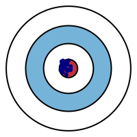
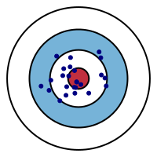
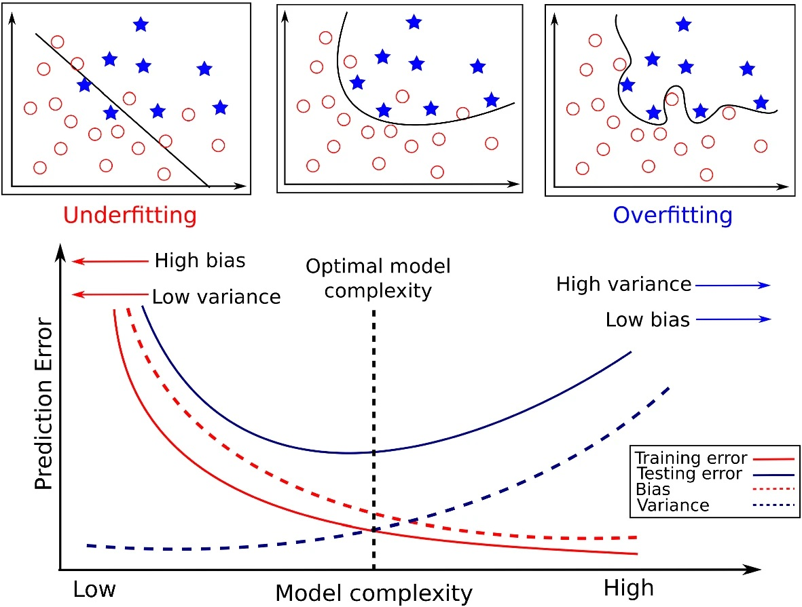
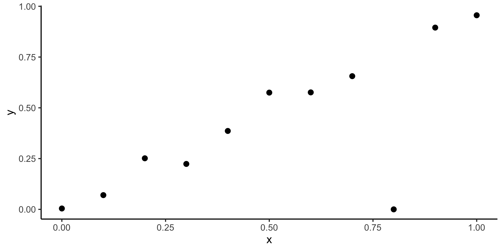
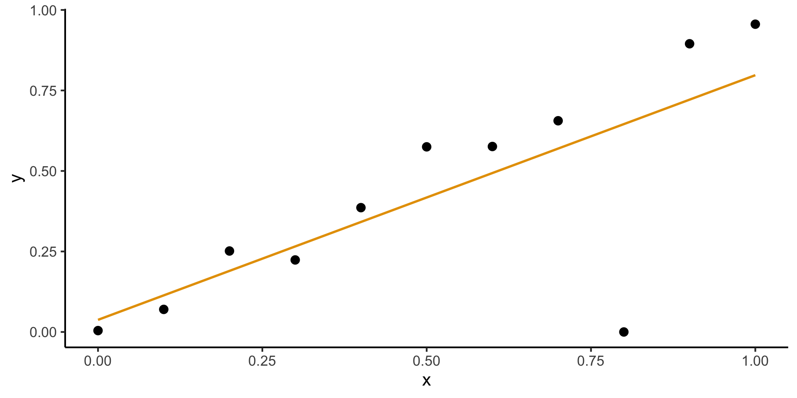
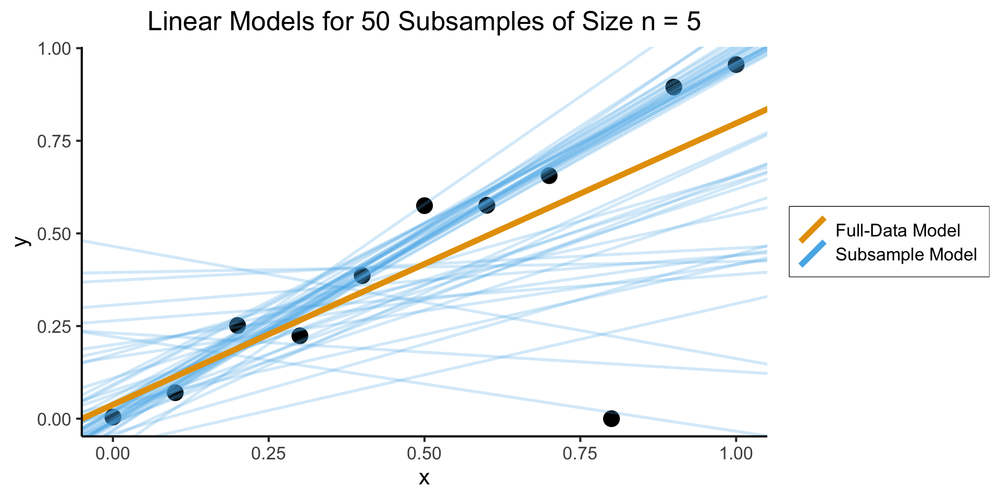
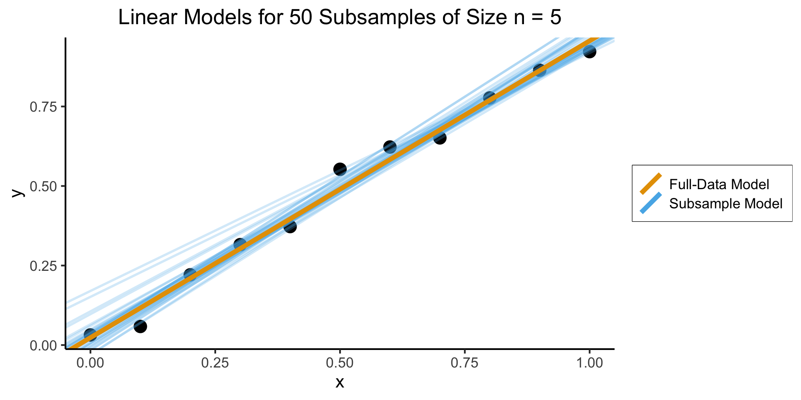
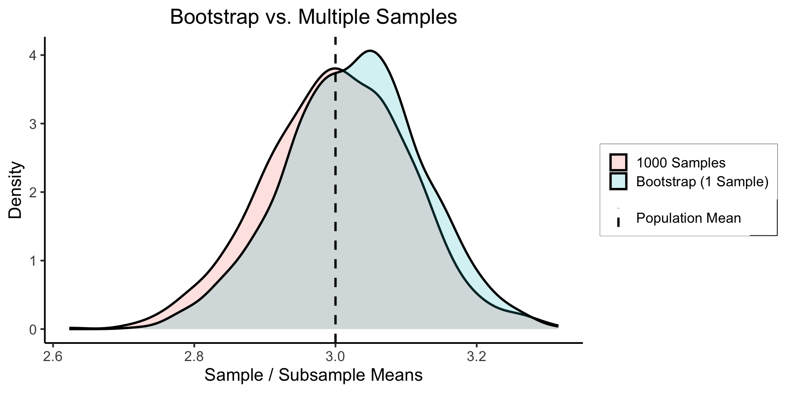
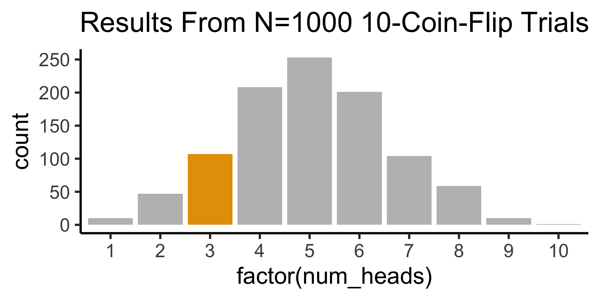
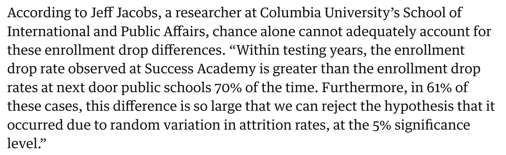

Code
source("../_globals.r")DSAN 5100: Probabilistic Modeling and Statistical Computing
Section 03
source("../_globals.r")\[ \DeclareMathOperator*{\argmax}{argmax} \DeclareMathOperator*{\argmin}{argmin} \newcommand{\bigexp}[1]{\exp\mkern-4mu\left[ #1 \right]} \newcommand{\bigexpect}[1]{\mathbb{E}\mkern-4mu \left[ #1 \right]} \newcommand{\convergesAS}{\overset{\text{a.s.}}{\longrightarrow}} \newcommand{\definedas}{\overset{\text{def}}{=}} \newcommand{\definedalign}{\overset{\phantom{\text{def}}}{=}} \newcommand{\eqeventual}{\overset{\mathclap{\text{\small{eventually}}}}{=}} \newcommand{\Err}{\text{Err}} \newcommand{\expect}[1]{\mathbb{E}[#1]} \newcommand{\expectsq}[1]{\mathbb{E}^2[#1]} \newcommand{\fw}[1]{\texttt{#1}} \newcommand{\given}{\mid} \newcommand{\green}[1]{\color{green}{#1}} \newcommand{\heads}{\outcome{heads}} \newcommand{\iid}{\overset{\text{\small{iid}}}{\sim}} \newcommand{\lik}{\mathcal{L}} \newcommand{\loglik}{\ell} \newcommand{\mle}{\textsf{ML}} \newcommand{\nimplies}{\;\not\!\!\!\!\implies} \newcommand{\orange}[1]{\color{orange}{#1}} \newcommand{\outcome}[1]{\textsf{#1}} \newcommand{\param}[1]{{\color{purple} #1}} \newcommand{\pgsamplespace}{\{\green{1},\green{2},\green{3},\purp{4},\purp{5},\purp{6}\}} \newcommand{\prob}[1]{P\left( #1 \right)} \newcommand{\purp}[1]{\color{purple}{#1}} \newcommand{\spacecap}{\; \cap \;} \newcommand{\spacewedge}{\; \wedge \;} \newcommand{\tails}{\outcome{tails}} \newcommand{\Var}[1]{\text{Var}[#1]} \newcommand{\bigVar}[1]{\text{Var}\mkern-4mu \left[ #1 \right]} \]
Today’s Planned Schedule:
| Start | End | Topic | Recording | |
|---|---|---|---|---|
| Lecture | 12:30pm | 12:40pm | Method of Moments (Deeper Dive) → | |
| 12:40pm | 1:10pm | Bootstrap Sampling → | ||
| 1:10pm | 1:40pm | Maximum Likelihood, GMM Estimation → | ||
| Break! | 1:40pm | 1:50pm | ||
| 1:50pm | 2:20pm | Bias-Variance Tradeoff Introduction → | ||
| Lab | 2:20pm | 2:40pm | Lab → | |
| 2:40pm | 3:00pm | Student Presentation |
Recall that the \(k\)th moment of an RV \(X\) is \(\mu_k = \expect{X^k}\)
e.g., \(\mu_1 = \expect{X}\), \(\mu_2 = \Var{X} + \expect{X}^2\)
Also recall (I rambled on about) how the MGF contains all information about a distribution. This means we can estimate distributions from data:
Define \(k\)th sample moment of \(\mathbf{X}_N\) to be \(\widehat{\mu}_k = \frac{1}{N}\sum_{i=1}^nX_i^k\). Then the system of equations:
\[ \begin{align*} \mu_1(\param{\theta}) &= \widehat{\mu}_1 \\ \mu_2(\param{\theta}) &= \widehat{\mu}_2 \\ &\vdots \\ \mu_N(\param{\theta}) &= \widehat{\mu}_N \end{align*} \]
Gives us a system of equations, allowing us to solve for parameters of our distribution!
Advantages:
Limitations:
| Low Variance | High Variance | |
|---|---|---|
| Low Bias |  |  |
| High Bias |  |
 |
Figure adapted from Fortmann-Roe (2012), “Understanding the Bias-Variance Tradeoff”
\[ \begin{align*} \Err(x_0) &= \bigexpect{\left.(Y − \widehat{f}(x_0))^2 \right| X = x_0} \\ &= \sigma^2_{\varepsilon} + \left( \bigexpect{\widehat{f}(x_0)} − f(x_0) \right)^2 + \mathbb{E}\left[\widehat{f}(x_0) − \bigexpect{\widehat{f}(x_0)}\right]^2 \\ &= \sigma^2_{\varepsilon} + \left( \text{Bias}(\widehat{f}(x_0)\right)^2 + \bigVar{\widehat{f}(x_0)} \\ &= \text{Irreducible Error} + \text{Bias}^2 + \text{Variance}. \end{align*} \]

Consider the following dataset:
x <- seq(from = 0, to = 1, by = 0.1)
n <- length(x)
eps <- rnorm(n, 0, 0.04)
y <- x + eps
# But make one big outlier
midpoint <- ceiling((3/4)*n)
y[midpoint] <- 0
of_data <- tibble::tibble(x=x, y=y)
# Linear model
lin_model <- lm(y ~ x)
# But now polynomial regression
poly_model <- lm(y ~ poly(x, degree = 10, raw=TRUE))
ggplot(of_data, aes(x = x, y = y)) +
geom_point(size = g_pointsize / 1.5) +
dsan_theme("full")
Fitting a linear model gives us:
ggplot(of_data, aes(x = x, y = y)) +
geom_point(size = g_pointsize / 1.5) +
geom_smooth(aes(color="Linear"), method = lm, se = FALSE, show.legend=FALSE) +
# geom_abline(aes(intercept = 0, slope = 1, color = "Linear"), linewidth = 1, show.legend = FALSE) +
# stat_smooth(
# method = "lm",
# formula = y ~ poly(x, 10, raw = TRUE),
# se = FALSE, aes(color = "Polynomial")
# ) +
dsan_theme("full")`geom_smooth()` using formula = 'y ~ x'
(What’s wrong with this picture?)
## Part 1: Set up data
library(dplyr)
Attaching package: 'dplyr'The following objects are masked from 'package:stats':
filter, lagThe following objects are masked from 'package:base':
intersect, setdiff, setequal, unionlibrary(ggplot2)
library(tibble)
# subsample <- of_data |> sample_n() sample(of_data, size=5)
gen_subsamples <- function(obs_data, num_subsamples, subsample_size) {
#print(subsample_size)
subsample_ints <- c()
subsample_coefs <- c()
for (i in 1:num_subsamples) {
cur_subsample <- obs_data |> sample_n(subsample_size, replace = TRUE)
cur_lin_model <- lm(y ~ x, data = cur_subsample)
cur_int <- cur_lin_model$coefficients[1]
subsample_ints <- c(subsample_ints, cur_int)
cur_coef <- cur_lin_model$coefficients[2]
subsample_coefs <- c(subsample_coefs, cur_coef)
}
subsample_df <- tibble(intercept = subsample_ints, coef = subsample_coefs)
return(subsample_df)
}
num_subsamples <- 50
subsample_size <- floor(nrow(of_data) / 2)
subsample_df <- gen_subsamples(of_data, num_subsamples, subsample_size)
full_model <- lm(y ~ x, data = of_data)
full_int <- full_model$coefficients[1]
full_coef <- full_model$coefficients[2]
full_df <- tibble(intercept=full_int, coef=full_coef)
mean_df <- tibble(
intercept=mean(subsample_df$intercept),
coef = mean(subsample_df$coef)
)
## Part 2: Plot
ggplot(of_data, aes(x = x, y = y)) +
geom_point(size=g_pointsize) +
# The random lines
geom_abline(data = subsample_df, aes(slope = coef, intercept = intercept, color='Subsample Model'), linewidth=g_linewidth, linetype="solid", alpha=0.25) +
# The original regression line
geom_abline(data=full_df, aes(slope = coef, intercept = intercept, color='Full-Data Model'), linewidth=2*g_linewidth) +
# The average of the random lines
#geom_abline(data=mean_df, aes(slope = coef, intercept = intercept, color='mean'), linewidth=2*g_linewidth) +
labs(
title = paste0("Linear Models for ", num_subsamples, " Subsamples of Size n = ", subsample_size),
color = element_blank()
) +
dsan_theme("full") +
theme(
legend.title = element_blank(),
legend.spacing.y = unit(0, "mm")
)
x <- seq(from = 0, to = 1, by = 0.1)
n <- length(x)
eps <- rnorm(n, 0, 0.04)
y <- x + eps
robust_data <- tibble(x = x, y = y)
robust_sub_df <- gen_subsamples(robust_data, 30, 5)
#print(robust_sub_df)
full_model_robust <- lm(y ~ x, data = robust_data)
full_int_robust <- full_model_robust$coefficients[1]
full_coef_robust <- full_model_robust$coefficients[2]
full_df_robust <- tibble(intercept = full_int_robust, coef = full_coef_robust)
ggplot(robust_data, aes(x = x, y = y)) +
geom_point(size=g_pointsize) +
# The random lines
geom_abline(data = robust_sub_df, aes(slope = coef, intercept = intercept, color='Subsample Model'), linewidth=g_linewidth, linetype="solid", alpha=0.25) +
# The original regression line
geom_abline(data=full_df_robust, aes(slope = coef, intercept = intercept, color='Full-Data Model'), linewidth=2*g_linewidth) +
# The average of the random lines
#geom_abline(data=mean_df, aes(slope = coef, intercept = intercept, color='mean'), linewidth=2*g_linewidth) +
labs(
title = paste0("Linear Models for ", num_subsamples, " Subsamples of Size n = ", subsample_size),
color = element_blank()
) +
dsan_theme("full") +
theme(
legend.title = element_blank(),
legend.spacing.y = unit(0, "mm")
)
Here the model is not “misled” by outliers
\[ \begin{align*} \widetilde{X}_1 &= \{x_2, x_4, x_5, x_7, x_9\} \\ \widetilde{X}_2 &= \{x_2, x_3, x_4, x_7, x_{10}\} \\ &~\vdots \\ \widetilde{X}_{100} &= \{x_3, x_3, x_7, x_8, x_8\} \end{align*} \]

Note in particular how: (a) sampling is done with replacement and (b) the original sample could therefore be replicated exactly in a bootstrap sample (here, \(\widetilde{X}_3\))
Answer: Absurdly, unreasonably well.
pop <- rnorm(1000000, mean = 3, sd = 1)
# Sampling 1k times
rand_samples <- replicate(
1000,
sample(pop, size=100, replace = FALSE)
)
sample_means <- colMeans(rand_samples)
sample_df <- tibble(est = sample_means, Method = "1000 Samples")
# Sampling 1 time and bootstrapping
bs_sample <- sample(pop, size = 100, replace = FALSE)
subsamples <- replicate(1000, sample(bs_sample, size=100, replace = TRUE))
bs_means <- colMeans(subsamples)
bs_df <- tibble(est = bs_means, Method = "Bootstrap (1 Sample)")
result_df <- bind_rows(sample_df, bs_df)
sim_dnorm <- function(x) dnorm(x, mean = 3, sd = 1)
ggplot(result_df, aes(x=est, fill=Method)) +
dsan_theme("full") +
geom_density(alpha=0.2, linewidth=g_linewidth) +
geom_vline(aes(xintercept=3, linetype="value"),linewidth=g_linewidth) +
scale_linetype_manual("", values=c("density"="solid", "value"="dashed"), labels=c("Population Mean", "testing")) +
theme(
legend.title = element_blank(),
legend.spacing.y = unit(0, "mm")
) +
labs(
title = "Bootstrap vs. Multiple Samples",
x = "Sample / Subsample Means",
y = "Density"
)
sample_est <- mean(sample_means)
sample_str <- sprintf("%.3f", sample_est)
sample_err <- abs(sample_est - 3)
sample_err_str <- sprintf("%.3f", sample_err)
sample_output <- paste0("1K samples estimate: ", sample_str, " (abs. err: ", sample_err_str, ")")
writeLines(sample_output)1K samples estimate: 3.003 (abs. err: 0.003)bs_est <- mean(bs_means)
bs_str <- sprintf("%.3f", bs_est)
bs_err <- abs(bs_est - 3)
bs_err_str <- sprintf("%.3f", bs_err)
bs_output <- paste0("Bootstrap estimate: ", bs_str, " (abs. err: ", bs_err_str, ")")
writeLines(bs_output)Bootstrap estimate: 3.026 (abs. err: 0.026)quantile(bs_means, c(0.025, 0.975)) 2.5% 97.5%
2.832128 3.213033 set.seed(5100)
library(Rlab)Rlab 4.0 attached.
Attaching package: 'Rlab'The following object is masked from 'package:tibble':
viewThe following object is masked from 'package:dplyr':
countThe following objects are masked from 'package:stats':
dexp, dgamma, dweibull, pexp, pgamma, pweibull, qexp, qgamma,
qweibull, rexp, rgamma, rweibullThe following object is masked from 'package:datasets':
precipnum_flips <- 10
p <- 0.5
coin_obs <- rbern(num_flips, p)
coin_str <- paste0(coin_obs, collapse=' ')
num_heads <- sum(coin_obs)
writeLines(paste0(coin_str," => ",num_heads," heads"))1 0 0 0 1 0 0 0 0 1 => 3 headslibrary(tidyverse)── Attaching core tidyverse packages ──────────────────────── tidyverse 2.0.0 ──
✔ forcats 1.0.0 ✔ readr 2.1.4
✔ lubridate 1.9.2 ✔ stringr 1.5.0
✔ purrr 1.0.2 ✔ tidyr 1.3.0
── Conflicts ────────────────────────────────────────── tidyverse_conflicts() ──
✖ Rlab::count() masks dplyr::count()
✖ dplyr::filter() masks stats::filter()
✖ dplyr::lag() masks stats::lag()
✖ Rlab::view() masks tibble::view()
ℹ Use the conflicted package (<http://conflicted.r-lib.org/>) to force all conflicts to become errorsnum_replications <- 1000
coin_seqs <- replicate(num_replications, rbern(num_flips, p))
heads_per_seq <- colSums(coin_seqs)
heads_df <- tibble(num_heads = heads_per_seq)
highlight_3 <- c(rep("grey",2), rep(cbPalette[1],1), rep("grey",7))
ggplot(heads_df, aes(x=factor(num_heads))) +
geom_histogram(stat='count', fill=highlight_3) +
dsan_theme("quarter") +
labs(
title=paste0("Results From N=",num_replications," 10-Coin-Flip Trials")
)Warning in geom_histogram(stat = "count", fill = highlight_3): Ignoring unknown
parameters: `binwidth`, `bins`, and `pad`
three_df <- heads_df |> filter(num_heads == 3)
nrow(three_df) / nrow(heads_df)[1] 0.10789 is a prime number, so if someone asks you to justify it, you can stare at them meaningfully and incant, “why, because it’s prime, of course!” That’s no worse than the conventional justification for 95%. (McElreath 2020, 88)
N_pub <- 1000
N_ch <- 250
It’s even more complicated, since we don’t even know whether the features \(X\) we’ve chosen are actually the features in the world that causally affect \(Y\), but that’s for later classes… Or see Hastie, Tibshirani, and Friedman (2013)!↩︎
The fact that this “just works” is similar to the surprising efficacy of the Naïve Bayes model (see DSAN 5000!)↩︎